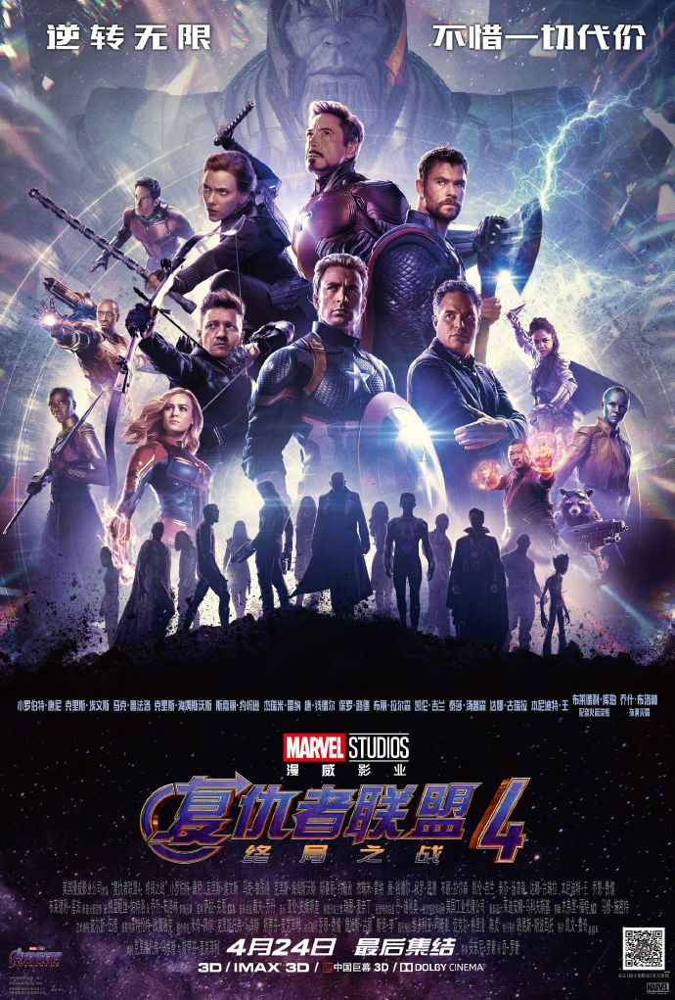

Redmi tiene un nuevo producto con Los Vengadores

Al parecer, según ha confirmado Xiaomi a través del perfil de Redmi en la red social Weibo, la ahora independiente sub marca, lanzará un nuevo dispositivo Redmi relacionado con la próxima película de Marvel.
Si recordamos, este 24 de abril se estrenará la película Los Vengadores: Endgame, una nueva película de Marvel que ya ha sido anteriormente patrocinada por OnePlus 6 Marvel Avengers, un terminal que aunque no cuenta con diferencias en el apartado hardware si que ofrece un diseño diferente así como accesorios relacionados con la saga de Marvel.
Ahora, según podemos leer en el enlace de la fuente (Weibo), Redmi lanzará un nuevo producto que llegará como una versión especial dedicada a esta nueva entrega de Los Vengadores. Aún así no se sabe con exactitud si estamos ante un gadget o un terminal móvil.
De igual forma, según los comentarios en la red social china, todo apunta a que será el Redmi Note 7 Pro el terminal elegido para realizar sobre el una nueva variante conmemorativa de la película de Marvel, llegando al mercado antes de su lanzamiento que será el 24 de abril.
